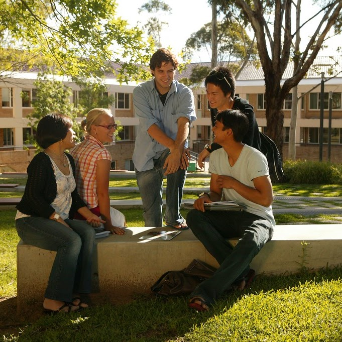

Academic Success
The Academic Success Team at UMSI is dedicated to supporting students inside and outside of the classroom. This site is dedicated to connecting students to tutoring and academic support resources.
UMSI Peer Tutoring Program
In partnership with our UMSI faculty, the UMSI Peer Tutoring program is an opportunity for UMSI students and students taking UMSI courses to engage with peer tutors and receive assistance and support in UMSI courses.
For more information regarding student support and tutoring, please email umsi.academicsuccess@umich.edu.
Promgramming Tutoring

General Courses
- SI 106 Programs, Information, and People
- SI 206 Data-Oriented Programming
- SI 506 Programming I
- SI 507 Intermediate Programming
- General Python Support
Tutors
- Tamariah Davis | SI 106 and SI 206 | Book an appointment
- Prem Ganesan | SI 106, SI 206, SI 301, SI 506, SI 507 & General Programming | Book an appointment
- Akash Dewan | SI 330, SI 305, SI 370 | Book an appointment
- Ayush Shah | SI 330 | Book an appointment
MADS Courses
- SIADS 505 Data Manipulation
- General Python Support
Tutors
- Julien Hovan | Book an appointment
- Liu Liu | Book an appointment
- Quentinn Roby | Book an appointment
Math Tutoring
Regular Courses
- Linear Algebra
- Statistics
- General Math Support
Tutors
- Rahat Naseem | SI 425, SI 370, SI 539 | Book an appointment
- Ayush Shah | SI 330, SI 544 | Book an appointment
- Nuzhat Zahan | SI 325, SI 370, SI 330, SI 544 | Book an appointment
MADS Courses
- Linear Algebra
- Statistics
- General Math Support
- SIADS 502 Math Methods I
Tutors
- Emily Mcclear | Book an appointment
Additional Academic Support
Sweetland Writing Center
The Sweetland Center for Writing supports student writing at all levels and in all forms and modes. Sweetland offers one-to-one tutoring for undergraduate and graduate students in our faculty-led Writing Workshop and undergraduate Peer Writing Center, and teaches writing courses from the undergraduate to the graduate level. Sweetland also provides support for all multilingual and international undergraduate students.
Learn more here.
English Language Institute
ELI exclusively serves members of the University of Michigan community with English for Academic Purposes courses and resources, GSI preparation, and TESOL courses that prepare students to teach English as a second or foreign language.
Learn more here.
Math Lab
The Math Lab provides free tutoring for mathematics courses numbered through 217. Though help is not regularly available for other courses, we will attempt to answer the questions of any U-M student who comes to us for mathematics help.
Learn more here.
Services for Students with Disabilities
Services for Students with Disabilities (SSD) recognizes disability as an integral part of diversity and is committed to creating an inclusive and equitable educational environment for disabled students.
Learn more here.
Peer to Peer Directory

Below is the link to UMSI students who are interested in serving as private tutors for SI courses and related content areas. UMSI maintains the directory (updated Fall/Winter semesters), but all interactions should be conducted peer-to-peer.
Learn more here.
Drop-In Academic Success Coaching
Drop-in academic success coaching sessions are an opportunity to meet 1:1 with our Graduate Academic Success Intern during the Winter 2025 term, to discuss questions about the following or similar topics:
- Time management skills
- Study skills
- Test preparation
- Utilizing campus resources
- Adjusting to university life
- And more!
Learn more here.